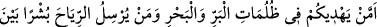
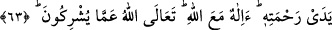

Bazıları: “Ârif her zaman dardadır” demiştir. Bu sözün mânâsı şudur: Avâmın darda
kalması, sebeplerin tahrik ve uyarmasıyladır. Bu ortadan kalkınca, onların darlığı da
gider. Bu durum, onların hislerinin/duyularının şühûd/müşâhedelerine galip olmasından
dolayıdır. Eğer onlar, Allah’ın her şeye şâmil ve kuşatan kabzasına şâhid olsalar,
Allah’a zarûret ve ihtiyaçlarının devamlı olduğunu bilirlerdi. Darda kalma/zarûret şart
ve vasfı devam ettiği için âriflerin duâsı sürekli makbuldür.
Duâda en önemli husus niyetleri hâlis kılmak, îtikâdı şüphelerin kirinden temizlemek
ve nasûh tevbe ile Allah’dan yardım istemektir. Sonra semâdan gelecek yardım ve
imdâda mahal olması için âzâ ve organları temizlemek gerekir. Misvâklanmak, koku
sürünmek, abdest almak, kıbleye dönmek, ihtiyaçları ve duâları arzetmeden önce
Allah’ı zikretmek, senâ etmek, Rasûlullah (s.a.)’e salât ve selâm getirmek. Tazarruda
bulunarak ve yalvararak ellerini açmak ve omuz hizâsına kadar kaldırmak.
Bâyezîd Bistâmî (k.s.) şöyle demiştir: “Bir gece Allah’a duâ ettim. Hava çok soğuk
olduğu için ellerimden sadece birini elbisemin yeninden çıkardım, diğerini çıkarmadım.
Bu arada uyuklamışım. Rüyamda gördüm ki, çıkardığım el nûr dolmuş, diğeri ise
bomboş. “Neden bu böyle oldu, yâ Rabbi!” dedim. “Taleb için çıkardığın elini
doldurduk, örttüğün ise mahrum kaldı.” diye nidâ olundu.”
Bazıları: “Şâyet hava soğuk; yahut özür sâhibi ise, şehâdet parmağı ile işâret eder. Bu,
iki avucunu açma yerine geçer.” demiştir. Nitetim el-Kunye’de böyle denilmektedir.
“Sizi yeryüzünün hâkimleri kılan mı?” Sizi geçmiş toplumların yerine ikamet ve
tasarrufta yeryüzünün vârisleri kılmak sûretiyle yeryüzünde halifeler kılan mı daha
hayırlıdır? Nitekim sizden her nesil kendinden önceki neslin yerini alır.
İşte bunca büyük nimetleri bütün insanlara bol bol ihsan eden “Allah’tan başka bir
ilah mı var! Ne kadar da kıt düşünüyorsunuz!” O’nun nimetlerini ne de az zaman
düşünüp hatırlıyorsunuz!
“__WORD__” kendisiyle yokluk ya da çok az ve faydasız olma bakımından yok hükmünde olma
kasdedilen azlık mânâsını te’kid için olan mâ-i mezîdedir.
Bunda işâret vardır ki bu sözün mânâsı, zekî olsun, ahmak olsun herkesin zihnine
yerleştirmiştir. Yine o, o kadar açıktır ki sadece ona yönelip üzerinde düşünmek
yeterlidir.
63. (Onlar mı hayırlı) yoksa karanın ve denizin karanlıkları içinde size yolu
bulduran, rahmetinin (yağmurun) önünde rüzgârları müjdeci olarak gönderen mi?